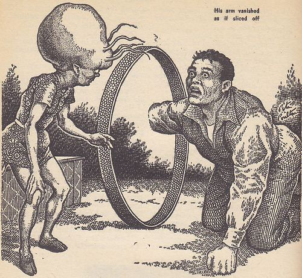
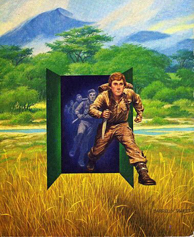
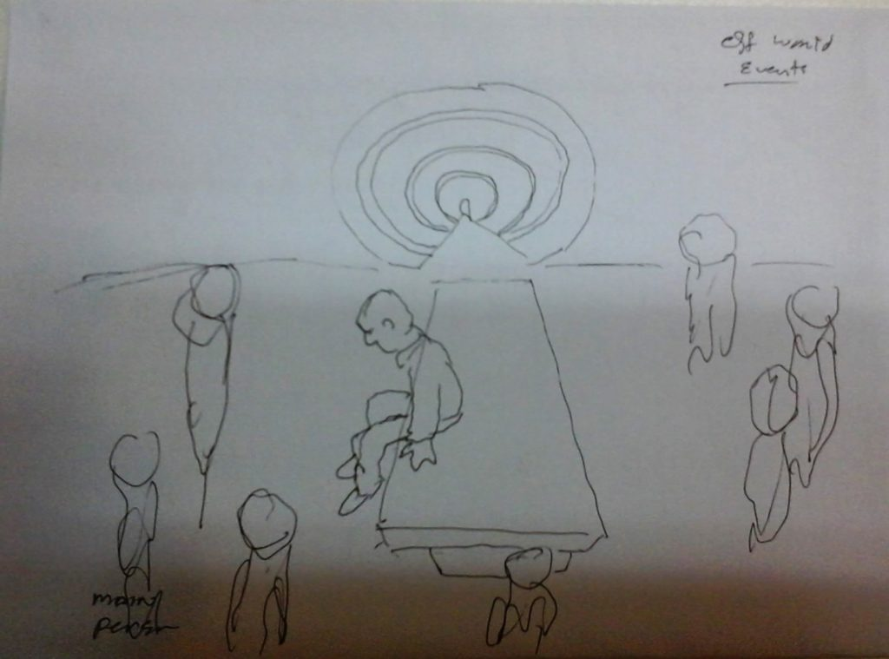
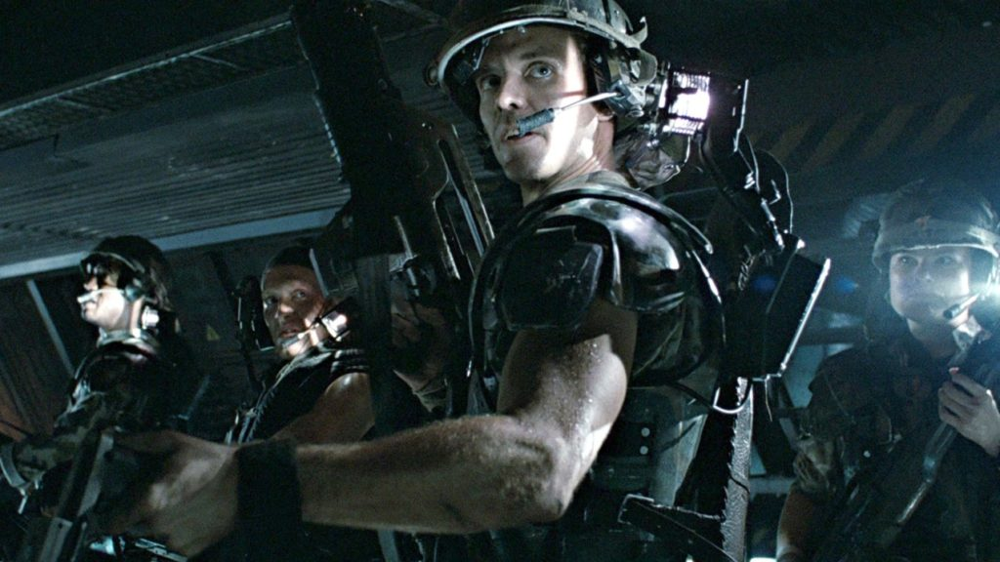

With the understanding of what different dimensional states are, the reader can now “guess” what transpired when I walked though the dimensional portal for my very first egress.
I exited one “reality” and entered another. That is how this technology works. Newtonian physics is limited to three dimensional movement and behaviors. (Left, right, up and down with time.) Yet, this technology was quantum in nature and involved fifth and sixth dimensional movement.
Background
For those readers who haven’t a clue as to what is going on, I suggest reading the following posts to “get up to speed”.


The Other Travelers at the Facility
What is true is that both I and my colleague had two complete probe kits implanted inside our skulls. (Later when we were sitting down together after the implantation Sebastian told me that he also had seven probes installed. As did I. That is how I knew that we both had the same number of probes installed.)
Once the MAJestic probes were in place, we were instructed to enter a fixed dimensional transport portal.
The pretty girls, whom greatly outnumbered us, also entered the transport portal, but were not implanted in the same way that we were. We do not know why that was. There were maybe 20 to 35 girls and only two of us. This was very strange, as all the girls were (apparently) civilians on a military base, while we were the only military individuals to enter the portal; the two of us compared to the girls.
The girls were not military. They did not salute, behave in a prescribed military manner, and did not wear uniforms. They were stunningly attractive civilians.
Additionally, none of the girls carried a purse (Something that I can only report on now, as a much older married man.) carried a small portable mirror or makeup in any form. The girls carried nothing with them. (Perhaps the girls were all being returned to their initial departure locations to resume their lives… Really, who knows what their purpose was there.)
I can only assume that the girls had a different destination and purpose than we did. We entered the transport portal in much the same way that people take airplane flights.
As such, you travel by car to the airport. Once inside you get your ticket and wait in the waiting room with others who share your flight. You do not know any of the others, but you can chat and strike up a conversation with them. Some go on travel for holiday, while others travel for routine business purposes. They only meet each other in the airport terminal because they share the same aircraft. Thus, in a like way, I can only assume that their destinations were different than mine.
- There were maybe 25 to 30 very attractive girls egressing through the portal.
- There were two AOCS, now members of MAJestic, egressing.
- When I arrived at the medical facility through the portal, I arrived alone.
Those Mysterious Girls & Questionnaire…
We do know, because of what was stated at the earlier lecture, that while they were members of a SAP, they were not members of a W(U)-SAP like Sebastian and I were. We know this from the joint SAP lecture that we all shared.
Moreover, both we and the girls, were actually connected in that we both had filled out the same mysterious questionnaire.
Did that questionnaire pertain to the use of the portal, or did it pertain to the fact that the first probe kit needed to be calibrated to our desires? Again, I do not know the true and real answer behind this and the specific line of questioning that was posed to us. I, for one, believe that it related to the calibration of the first ELF implanted probes.
I argue that just because the girls were not implanted at the same time as we were, does not preclude the possibility that they were also implanted, but at a different time.
I have often wondered about these young ladies. What sort of SAP were they in? All I know is that they are not at all part of our W(U)-SAP.
In hindsight, I can confirm that I was married three times. My first and my last (current) wives both fit the appearance questionnaire exactly. Both had long brown hair. Both had an oval face. Both had brown / green eyes. Both had a nice chest (My first had an amazing 38JJJ rack.). Both had long legs, and a nice tight ass. Both were shapely and curvaceous of a size 6 to 8. So check – check – check. Both were, and still are good, kind and very supportive of me.
Yet, the mystery in all of this is that the second wife, the one whom “retired me”, did not fit this profile. Not at all. She had none of the attributes that I had confided to on the form handout. In fact, and this statement is not prejudicial due to the retirement event, was the fact that she was not attractive. She was short in statue, fat and plump in build (size 20+) with an angular face, and harsh demeanor. Why is this so? I conclude that since my second wife did NOT fit my performance criteria, and was involved in my retirement, that the agents in charge of my (and other MAJestic members) retirement were not MAJestic. They were part of a different program who's role is retirement of SAP agents.
Alternatively, the questionnaire might actually simply be associated with the retirement sequence that I will go through 30 years in the future. There, the match up of the guys and the girls would hold a tactical importance in the positioning of the proper retirement team so that the agents (us) could enter the monitoring program upon retirement.
Somewhere, out there, are some survivors of the girls that entered the portal with me. Perhaps even one of them are reading this manuscript today. Or, alternatively, one of them is talking to someone else who has read this manuscript. While I am well done by now, I would be quite happy to hear what happened to the girls and what their actual mission parameters were. I am sure that it differed from my own experiences. However, I am sure that it is just as interesting and would shed some light onto my role in the program that I was in.
First Egress Purpose
While no one told us anything, I have been able to string together the entire process and purpose of the first Fixed Portal Egress.
- At some point in time, MAJestic made an agreement with <redacted>.
- Sebastian and myself were selected for participation in this program.
- The program required that we both be remade and have a very special EBP implanted.
- The EBP would enable us MWI access.
The <redacted> had been monitoring humans for centuries. They know our biology. They have also been implanting EBP’s in humans of various types for various purposes. However, this EBP and our roles were very unique. We needed some sort of special and drawn out medical procedure that would take the <redacted> a full week of complex surgery.
This was not a simple capture-probe-and-release. A vehicle couldn’t materialize and implant the EBP in ten or fifteen minutes. This was something else completely. We had to go to a fully equipped hospital.
This was not just a small device could be placed inside my skull. This was different. We would be provided with a different kind of human body. Within this new or remade body, the ERP would work more efficiently.
So in order to have the EBP implanted, we would need to go to an extraterrestrial medical facility. Being “remade” was a very complex procedure. It involved not only EBP, but a complete rebuilding of our bodies. This is because we would be given autonomous MWI egress ability. Our normal human bodies had to be changed to allow this.
Thus,
- The Fixed Dimensional Portal transported us to the medical facility.
- During the transport, our consciousness was separated from the physical body.
- The consciousness was put into a storage receptacle.
- A new body was constructed from the original body.
- A complex medical procedure occurred.
- Then, we were released.
Thus, we now know why the events occurred in the sequence as I have reported.
- The Feducial training was for Fixed Portal Egress.
- The ELF implants core kit #1 was for MAJestic Memory Lockout. It had nothing to do with the medical procedure.
- The ELF implants core kit #2 was for MAJestic monitoring of my MWI access.
- Later, I had to go to China Lake to train and program these MAJestic core kit #2 probes.
- The core kit #2 probes interfaced with an extraterrestrial probe; EBP.
This first egress was to have the EBP installed and my consciousness placed within a reconfigured human body.
An Extraterrestrial Medical Facility
To go to the medical facility, we had to enter a “transport portal”. To an outsider this was just an empty space inside an empty hanger. But, appearances are always an illusion, and this was no exception. There was a door, it was just invisible. The door was open, but you couldn’t see inside it. The door was quiet, and free of vibration of motion until you are right next to it.
This door had to be entered at the proper angle, and at the proper moment. The door was specifically calibrated or keyed for a [1] specific destination, and that is for a [2] specific person.
The calibration of the "keys" had to do with the mysterious questionnaire.
I fear what would happen for someone to enter the field improperly. Who knows what would happen to them. Would they be teleported to an unknown dimension? Would they end up in a different time, or place? Would they be transported into the ocean, or inside a wall? Or would they be smashed and ground underneath the huge grinding wheels? Or would their consciousness be disassembled and tossed about the cosmos for all eternity? The thoughts are frightening.
Consciousness depends on manipulating time. Many cognitive abilities are important for consciousness, and we don’t yet have a complete picture. But it’s clear that the ability to manipulate time and possibility is a crucial feature. In contrast to aquatic life, land-based animals, whose vision-based sensory field extends for hundreds of meters, have time to contemplate a variety of actions and pick the best one. The origin of grammar allowed us to talk about such hypothetical futures with each other. Consciousness wouldn’t be possible without the ability to imagine other times. What is the point of this? It is this, consciousness and time are interrelated. You cannot have one without the other, and thus for consciousness to travel, time is affected.
Technology
Obviously, this level of transport technology was far superior to anything that I have ever expected to experience. Sure, we knew that we had entered a “Top Secret” program, but we expected the level of technology to be contemporaneous. This was 1981. Phones were hardwired to the wall. The closest anyone ever got to a cell phone was the Star Trek television series. Television remote controls were just then being sold. They were big and clunky.
We pretty much expected that the military had some advanced hardware. After all, the F-18 was just starting to get deployed. We were all very excited about that. All of my fellow AOC’s were looking forward the strong possibility of flying this type of aircraft. We thought that there might me more advanced technology that we would be exposed to. Maybe a jet-pack where you could fly around in the sky, or a pair of boots that would allow you to walk on the ceiling.
We did not expect technology that was thousands of years more advanced than what was portrayed in the Star Wars movie, or in Star Trek. Not simply “more” advanced, but many, many centuries more advanced than what we could even conceive of.
After all, I, for one, was an avid science fiction fan, and even I could not fathom the existence of such technology before us. When I thought about high technology, I thought about rockets and sleek computers. I thought about white lab coats, hand held calculators, and large computers with spinning reels of tape.
I never, ever thought about [1] teleportation across the universe, [2] real-life flesh-and-blood extraterrestrials, [3] genetic manipulation, or [4] the ability to remove a soul from a body and put it in a container.
During the 1960’s and in to the early 1970’s all the computers were uniformly depicted as large computer rooms filled with large rectangular boxes.
At the top portion of each box were two spinning reels of tape. Below the rotating wheels were multi-colored lights often flashing on and off in a myriad of colors.
The reader can easily see examples of this in the 1960 series of “Batman”. In his “Bat Lair”, or “Bat Cave”, he had this kind of computer displayed prominently and (even) labeled. Other examples abound. For instance, the television show “The Man from U.N.C.L.E.’ or “Lost in Space”, or “I dream of Jeanie”, all used this stereotypical depiction.
In fact, I even thought that the Star Trek “transporter” system was rather far fetched and outlandish. Well, I did. I thought that it was silly and that having it as part of the show distracted from the more plausible technology.
Today, we have certain science fiction movies and shows that incorporate the idea of “dimensional doors” or “transport portals”. In the eyes of Hollywood, these portals come in different sizes and shapes but typically consist of a watery shimmer surface, or a defined boundary edge, like the rim of a mirror. But, I tell the reader the truth; it isn’t at all like Hollywood makes it appear to be like.

In reality, there are no spherical portals or doors. There isn’t a water-like shine to the surface. (I am referring to the special effects that you would see in the TV show “Stargate SG-1”.) There isn’t a kind of cloud or light shaped tunnel that you might see in science-fiction movies.
You don’t see anything.
You see nothing. It all just looks like a bare cinder-block wall in a large hangar or storage room. The only difference was a staging line indicated by a piece of tape on the floor and a podium next to it, where the sailor would stand and check off the checklist.
Incidentally, to avoid confusion, the portal is not IN the wall where the fiducials are positioned. It is about nine feet away from the wall. You have to walk towards the fiducials and at some point around nine feet from the wall you disappear. Also, after much thought, the use of the fiducials apparently center the operation of the implanted probes. Therefore, since the pretty girls used the fiducials, they must have been implanted just like myself. Otherwise they would not have been able to enter the portal.
Capability
The transport portal is capable of transporting people and things to different places.
- It can transport a person to a different place.
- That place can be anywhere in the universe.
- It can transport a person to a different time.
- It can transport that person to a different world-line.
Each one of us went to a different destination. Obviously I ended up in a different location than the girls who preceded me. Also, my colleague (Sebastian) did not join me after I entered the portal. Where I went was intended for me and me alone. I entered the portal alone, and thus left alone and arrived alone to my destination.
There is no question about this.
We all ended up in different locations. If each one of us ended up in a different location, which implied that perhaps as many as up to 25 locations were prepped for us all individually. Were there really 25 fully staffed locations for us, or were there different locations at different times? The concepts and thoughts boggle the mind.
Personally, I believe that this is what was going on... We all had different destinations. These destinations were at different locations, and the time we spent at the destinations varied substantially. Sebastian and I alone were being implanted with the EBP, and the rest of the girls were off doing other things.
Alternatively, the portal might have placed us at the same location, but at different times. If so, the workers at the place where we were transported to were rather busy, and I was one of the last ones to be operated on. But, how can this be true? There were others behind me. Maybe ten or more.
So how could they return back to the base? Later, after the procedure, the base commander picked me up personally and took me to the mess hall for dinner a full week later.
Other Reports
There are various reports on the Internet and in various obscure writings relating to others who have claimed to see and enter this portal. Some state that this portal is a kind of time machine, while others state that it is some kind of dimensional door.
I think that everyone is just making guesses based upon their experiences and are simply trying to piece together a plausible story based upon what they experienced.
The lone report that sounded most similar to my experiences stated that the portal transported them to a Martian facility where they lived for 20 years (!) as a human at the base, and then age regressed them and slipped them back to the year when they entered the portal. WOW!
However, this story does not agree with what I know about the quantum body signatures of the physical body; the accumulation of 20 years of experiences does not simply disappear when one is “age regressed”. It exists and it will affect ones physical body in some way. In any event, it is a nice story, but doesn’t seem plausible based on my own personal experiences.
The Technology Behind the Egress Portal
I was never briefed on the history of the technology used. It was never explained to me, nor did I ever study the operational parameters, calibration, and technology of the device. Even at the <redacted>, those aspects never became part of my responsibility.
Additionally, the reader should consider the realistic and practical aspects of my reality.
Do nurses in hospitals understand how the electrical systems in the elevators work? Do the doctors understand how the machines they use work, and can they repair them? Do the lawyers who represent the hospitals understand the day to day pressures of the staff and how it affects the children of the workers? Of course not.
I only knew what I needed to know and no more. It was intended that I be kept ignorant while I performed my operational assignment.
I was in a compartmentalized program. I only knew what I needed to know and no more.
Off-World
I entered a fixed dimensional world-line portal and went “elsewhere”. This section discusses that event.

The portal was a tool; a device, and artifice. I was trained how to the use the fiducials, and was directed how to enter the device, but I was not told how it worked or what it did.
This event has many questions for me, as it would for the reader, and none of my answers that I posit are completely acceptable. Yet, I place it here in its impoverished condition as it is. This is a singular significant event in my life and it colors all subsequent events substantially.
“We have the technology to take ET home, anything you can imagine we already have the technology to do, but these technologies are locked up in black budget projects. It would take an act of God to ever get them out to benefit humanity.” – Ben Rich, Former CEO of Lockheed Skunk Works. From the NPCC video "The Disclosure Project" that was done in 2001 prior to 9/11. He is seen on the video making this quote at about 35 minutes into the 2 hour video. Cross checking on the internet will reveal some interesting counter claims to this quote. The counter claims are all along the lines of this quote never happened. Yet, if you actually get the video and watch it, you will see him actually making this statement. Oh! The disinformation staff, and the millennial Internet youth can be so silly. The counter claims will state that the quote is fabricated and that it was never made. Curious. Both Wikipedia and Fact-Checking websites hold this stance. But, it is obviously made once you yourself watch the video. Obviously someone or some organization has devoted time and effort to erase the validity of the existence of this quote. (As discussed elsewhere in my narrative, I caution the reader to realize that the United States government controls all of what you see and read on the Internet. They are constantly rewriting history to fit their preferred narrative.) However, they have been unsuccessful in erasing the video. Their interim solution has been to flood the Internet with edited versions of the video. Yet, the original videos are still out there, you just have to be careful and search for them. Therefore, as I state elsewhere in this narrative; the reader must go to the source itself. Not get their information from third parties. Further, they should view the video in its original state. Not the later edited versions. Obviously, someone or some agency has devoted significant resources to erase this statements validity.
Arrival
I do not recall my arrival. I do not know at what facility I was at. From my point of view, there are no memories of my arrival into my destination. There could be many reasons for this. I speculate that it is a normal procedure to erase or block the memories of the people who go to this facility. This is so that they maintain the secrecy of the off-world experience.
I believe this to be the case. However, my mind has constructed alternative realities that suggest otherwise. Nevertheless, I ignore them.
At some point in my procedure there, I was able to start recording memories normally. Again, I do not know why. I speculate that it is because of the unusual procedure that I was involved in. There is no question that there was a compartmentalization of my memory at that time, and as a result I am still able to remember some events, while others remain hidden from me. It’s a burden that will certainly color my experiences that I relate here.
Or perhaps, there was a mental suppression device located within the room where I was operated on. Once I exited the chamber, the device no longer had control over my mental functions.
What I Remember
My earliest memories of this particular experience was while I was lying down on a table.
Everything had a deep and dark reddish tint to it, and it was pretty dim in the room. There were <redacted> surrounding me. I was unable to make out their faces clearly due to a focusing irregularity with my eyes.
Does this sound like a typical abduction sequence? It should, there are a great number of similarities. Perhaps we are all wholly just cattle to the <redacted>. They do with us as they desire, with little opposition from ourselves.
The destination where I went to was some kind of medical facility. My memories of this time tend to be a little confused because while I was there, I was having my probe software updated as well as having other things done to me of a physical nature. What I do remember and know is rather basic. In general, I spent the entire time in only one room that I was aware of.
The place where I went to was odd and it felt strange.
It had a lighter gravity to begin with. I felt light, and my body moved a little differently. It was as if I could move further with less effort, but it was also a little harder to stop. I felt like my body was buoyant, almost like it had some helium in it. Not much, like when you watch videos of when people walking on top of a big trampoline. But less than that, perhaps a 20% to 30% difference from what I was normally accustomed to experiencing.
I have always ASSUMED that the facility that I went to was on the planet Mars, but the collection of my experiences do not support this assumption. The gravity on mars is 38% that of the gravity on earth. Yet, the gravity at this facility was more like 60 to 70% that of earth. So it bears the question, where was I?
Answers to this question include [1] another planet all together, [2] in a facility with it’s own form of artificial gravity, or even [3] that maybe I was in a different dimension yet still on earth with a different gravity. It is up to the reader to answer this vexing issue that still persists in my mind.
The lighting was red. Not the same as the red light used in photo darkrooms, but more like a heavy reddish tinted streetlight. Everything there was bathed in a dark reddish color light. That was a mystery to me. I could see clearly enough, but I could not understand why the light was so red.
Today, when I watch science fiction movies, we see scenes such as inside the (Star Trek) Klingon spaceships, or in other alien appearing locations. As stereotypical as it is, that was exactly the kind of lighting that was in the chamber that I was in. The only difference was that the light was a darker red and it was a bit more difficult to see inside. It was pretty dim to my eyes. (That does not mean, at all, that it was dim to other eyes well adapted to this light. Not every creature has the same kind of eyes as humans do.)
Predators is a 2010 American science fiction action film. The film follows Royce (Adrien Brody), a mercenary, who wakes up finding himself falling from the sky into a jungle. There is a scene in the movie where the mercenary finds shelter within an alien designed machine with odd reddish lighting.
The temperature was a comfortable normal temperature and humidity. The air was fresh, but it was a little thick, however. It felt like an oppressive cloudy day before it rains. It was sticky, but not moist. Suggestive of a differing pressure differential than what we experience on the earth; a higher pressure perhaps. Or a slightly different atmosphere; more oxygen in the atmosphere, or different atmospheric composition.

During this time off-planet I stayed in only one room, in one place. During most of that time I laid down prone on a table. I could not see what the others in the room looked like as the light was so dim and red, and the air was so thick. But there were some very short <redacted> there, as well as some abnormally tall <redacted> creatures as well.
I could see their faces quite clearly, but I could not study their faces. I failed to pay attention as to their facial features. I could see that they had very large eyes and a tiny small mouth and that they were short and that they wore clothing (long sleeved with a turtleneck style collar - single color, and unadorned), but my thoughts at that time was not at all concerned with the analytical estimation of every little detail surrounding me, instead I was simply lying on the table trying to get a general bearing as to my situation and role at that moment.
A Medical Facility
By all accounts, from what I observed to what transpired, I have concluded that this was some sort of medical facility. The strange thing about it was that it was unlike any kind of hospital that I have ever been exposed to before. Yes, it was unusual and somewhat strange, but it was not like what one would envision a medical-bay would look like.
No, the experience was not as it was depicted in science-fiction movies or the period pulp magazines of the time. It was more like a hospital or clinic. The <redacted> entities were neutral, but treated me respectfully and carefully.
They were not grotesque, nor clad in futuristic garments. They were methodical, neutral in actions, and aside from their appearance just natural in demeanor.
I was the center of attention in the room. There were no other tables with any of my colleagues there. All the entities in the room were focused on me and on me alone. I lay on the table in my naval uniform. I lay on my back and my face was towards the ceiling. All of the entities were facing me. There were perhaps twelve others in the room with me. I was the center of attention.
There were two entities of significance. One was to my right side as I lay on the table. It (What gender it was; he or she is unknown, so I refer to it as “it”; a genderless designation which is as accurate as I can make at this time.) was the apparent “team leader”. Another entity, of a different species, was positioned near my head. It was tall. (It felt like a doctor, controller, or technical expert.) The other appeared to be the one in charge, or felt like the leader to me. It was to my left. That entity to my left helped direct me to get up off the table.
It thought what I should do, and my body obeyed.
No words were communicated. No thoughts were formed. I did not think. I did what they commanded of me.
These “entities” as I so politely call them, are what I later refer to as <redacted>, and <redacted>. This was my only physical encounter with them in the human body. All other dealings with them were in the <redacted> and because of that entanglement; my experiences were (sort of) different from what I experienced during this particular “off-world” event.
Additional Surgery
I have throughout my narrative referred to this event as my “first off-world” event. It’s purpose was to provide a second surgical procedure. The first procedure was, of course, the seven probes installed at the ELF sub-complex within NAMI at NAS, NASC Naval base. This procedure installed other additional components within my body.
This second procedure was conducted using extraterrestrials, in an extraterrestrial setting, with extraterrestrial technology.
The first group of MAJestic installed probes came in two groups. These were core kit #1, and core kit #2. This second group of technology worked independently. However, the second group (core kit #2) probes somehow interfaced with these extraterrestrial probes.
This procedure and the reason for the egress was to place these probes inside my body. The probes are EBP, but it really isn’t that simple as placing a little device inside your skull, like the MAJestic probes were. They did things to my physical body. They changed it in significant ways.
I do not know how the entire system worked together.
Experiences
I want to make it perfectly clear to the reader about some key points here.
- Firstly; [1] the feelings and thoughts and experiences that I felt and experienced as a human meeting a <redacted> extraterrestrial were vastly different than that of an <redacted> meeting one.
- And, secondly; [2] for whatever reason for this, be it mind control, drugs or memory partitioning, my human mind remembers the events in a different way than the entangled human memories do with the <redacted>.
These are key salient points that must be well understood to fully appreciate the information that I lay out here.
During this “off-world” encounter with the <redacted> extraterrestrials I clearly recall their appearance and the overall feelings that I had when I was with them. But what I recall is difficult to accurately relate. Because, [1] while they looked and appeared to be alien to me; they were after all, an extraterrestrial of a unique appearance, [2] they felt like a normal and even a friendly person. I felt love and calmness emanating from them. They did not seem to be alien. They did not seem to be extraterrestrial at all. They did not seem to be dangerous or harmful. They did not feel to be a threat. Honestly there wasn’t any antagonism at all concerning them.
I want to make this point absolutely clear. They can control our minds and our emotions. One does not need to have probes installed in their heads to feel these effects. Whether my feelings and thoughts were my own I cannot tell the reader. I can only tell them what I experienced. So for the purposes of this narrative I will refer to the <redacted> extraterrestrials that I met in the physical form as “entities” rather than extraterrestrials. This is because how one sees them is different than how one feels when they are around them. They do NOT feel alien to the observer. They do NOT feel like an extraterrestrial.
Elsewhere in my narrative I explicitly state that I never met extraterrestrials while on the earth. It is true. I had one “off-world” exposure to them. It was not on the earth, but was instead in a controlled environment where both my memories and my feelings were under their influence. My memories of this time were with “entities”, and not with extraterrestrials.
All my other experiences with them were through the entanglement process with the MWI operations. In those experiences my memories and feelings were colored by my actual human body without any kind of manipulation of extraterrestrial hindrances.
Time to Leave
Everything felt odd and strange to me. Even though I lay on the table, I had no concept of time, and it seemed like time did not exist.
Eventually, I was “told” to get up from the table.
No one talked to me. I did not hear any words. I just “knew” that I was to get up from the table at that point in time. That is what happened. I just knew that I was to get up. No one told me. No one motioned. I just suddenly got up.
To me it felt like it was “ after the event”. I very quickly lifted myself up from the table and sat up on the right side of the table (relative to how I was laying). I was able to get up so quickly; so surprisingly quickly, because the gravity felt so light. (In fact, the <redacted> entity in front of me held out his left arm to stabilize me.)
I sat on the edge for a long time. I just sat there in a daze and looked forward. I looked without seeing. Perhaps five minutes passed while I looked forward. My gaze was sent directly towards the small <redacted> before me.
I looked at “him” but did not “see” him. I only viewed him from the context of mental ambiguity. My mind was unable to really process what I was seeing in front of me. It was a <redacted> of short stature and bland impression. But it was an entity in control, and at that I understood that it controlled my actions. I looked at it without seeing.
I then sat there for an even longer period of time. Perhaps for five minutes. I just looked at the creature in front of me.
He was small in stature and expressionless. But it was obvious that it was in control. I paused (a pretty long time. Maybe for ten minutes.), and then stood up. I took two steps forward and again stood in place. On my own, I turned my body, so that I faced directly to my right.
I feel that I really need to impress upon the reader that this was a real shock to me. While I was laying there, I did not notice anything strange or different. It was odd, but not unusual. It was only when I got up and sat up that it became physically obvious that things were quite different than what I was used to. This is very difficult to explain to someone. I suppose it is akin to a drunk person suddenly “sobering up” when they get into a car accident. There is a sudden and clear realization that things were different.
It was not done by conscious decision or direction. I just did it mindlessly. I did it as if it was normal and the thing to do. I knew how to get up and that I had to turn to the right. I did this all without any kind of conscious control or realization of my actions. No one pointed to that direction. No one raised a limb. I just got up and turned right. That was what I needed to do. That was what I was supposed to do. That was what I did.
I started to walk forward. My walking gait was really unusual. My strides were much longer than they should have been. It was like I was propelling myself forward with every step. I kept my balance, but it felt totally odd and unusual. It was like I was “bounding forward” but doing so with very little effort.
Curiously, throughout the entire off-world experience I knew exactly what to do, when to do it, and where to go without any instructions from anyone else.
I paused for a minute and looked back. Everyone was just standing there not moving and watching me. I then continued forward.
Finding the Exit
I was “directed” towards a small tunnel that was set into the wall. (No one pointed to it or told me what to do. I just “knew” what to do mindlessly.) It lay exactly at the foot of the bed or table that I had lain upon. The opening to the tunnel was approximately three meters from the edge of the table.
The tunnel itself was a functional structure that incorporated the transport portal without the need for a staging line. It was circular in shape with a flat floor, and most importantly the floor seemed to slant downward. Whether or not this was an actual design due to a grade of the design, or whether it was due to the differences in gravity between the facilities I was leaving, and the place where I was going to, I do not know. I personally believe that it was due to the differences in gravity.
I do not think that it actually had a grade. But it most certainly seemed to slant forward. After much consideration, I have concluded that there must be some kind of gravitational variance involved from a light gravel point to a higher gravity “well”.
As I walked down the tunnel, I could feel the strange gravity and feel the oddness of the place. I felt pulled forward slightly as I walked down the short corridor. The tunnel was short, perhaps seven meters long. The sides were ribbed, or at least appeared to be to me. The illumination and lighting of the tunnel came from the room that I had just left, as well as the tunnel itself, and up before me which was a nearly opaque wall of light whitish fog.
The fog was illuminated in a kind of pale and soft whiteness. But as I got closer to it, the further away it appeared. Truly, as I walked down in the tunnel it seemed longer than it appeared. For some reason I should of traversed the seven meters in 5 seconds, but it seemed to take quite a bit longer to walk down, perhaps 20 seconds. Also, I found that my head got clearer and more conscious as I walked down it.
The ribs were structural. They were curved and protruded off from the sides by a distance of around six to eight inches, and around the same width. Between the ribs were lighting fixtures that curved around the walls much like the ribs. The deck was flat, unribbed, and without lighting fixtures.
It was as if the chamber that I was in was bathed in some kind of radiation that interrupted my thoughts and memories. Thus, as I left the chamber, the influence decreased proportionally.
As I walked down the passage, I noticed that the experience was quite different than it was going in.
I did not hear any ringing in the ears, or did I feel any vibration. I simply walked down and while I did so, my mind got clearer, but my vision got blurred. Eventually, the passage I was walking on got very “thick”. It felt like I was walking through thick fog. It felt like I was getting wet. It got thicker and thicker until it was like a thick sheet of gaseous water that I passed through. I actually felt wet. However, that wasn’t the case at all, as I was quite dry. And the more I walked the thickness of the fog changed and surprisingly I was back at NAS NASC Pensacola, Florida.
This is what it is truly and actually like using the transport portal. It has nothing in common with how these things are represented in Hollywood movies. Everyone who has used these portals can affirm the accuracy of my description.
Purpose and Utility.
"Don't you believe in anything?" Yes", I said. "I believe in evidence. I believe in observation, measurement, and reasoning, confirmed by independent observers. I'll believe anything, no matter how wild and ridiculous, if there is evidence for it. The wilder and more ridiculous something is, however, the firmer and more solid the evidence will have to be.” ― Isaac Asimov
Two different set of probes required two different sets of procedures.
- The MAJestic ELF probes required implantation, training, and later on calibration and programming.
- This EBP was more involved and required off-world medical attention in a well equipped extraterrestrial hospital setting with extraterrestrial doctors and specialists.
There were many things that happened during this period that involved [1] quantum cloud realignments, [2a] dimensional placement (which included [2b] time modification) and [3] physical deconstruction and [4] reconstruction events. I have no words to express the confused state of affairs for me at that time.
Therefore, for purposes of simplicity, I have labeled everything as a “medical EBP exercise” that involved technologies far about what I am ever able to communicate.
Technology Considerations.
These extraterrestrial races can [1] remove a consciousness (not a soul) from a body. [2] Place it in a container. And, then when they are ready, [3] return it back to its original host body. This is an amazing level of technology.
This is a technology that is in possession of our various extraterrestrial allies. It is quite mature in the regard towards soul transference. In the simplest of terms, this is the ability to remove a soul from a person and place it elsewhere. Specifically, soul transference is the ability to separate key quanta from an individual’s quantum cloud and place it somewhere else physically. Usually it is placed in a container of some sort, or a specially constructed physical body.
They can transfer their souls or the souls of another into <redacted>, or into <redacted> specifically constructed for a specific purpose. They have the ability to transfer the human soul into <redacted>. However, for reasons not entirely clear, they chose not to do so. Instead, my soul was entangled with <redacted>.
The level of technology to enable this kind of science and ability is nothing short of astounding. Not only do the extraterrestrials need to understand how the soul works and the quantum physics behind it, but they need to possess the engineering ability to apply the science into practical applications. This engineering ability must be extensive. The ability to [1] separate certain groupings or clusters of particles; to [2] identify which is important and critical; to [3] move and place them in separate physical locations [4] without inter-connectivity with the host quantum cloud is unbelievably impressive.
While I have acquired an impressive knowledge base concerning the quantum cloud that we refer to as the soul, my understanding is at best, only trivial in scope.
The transference <redacted> is typically a physical container; like a box or cylinder, that is specially designed to contain the physical attachment points of a given soul. The physical body is the densest manifestation of quanta. But the soul can detach from it; just like when a person dies. Thus leaving the physical body behind. It then “leaves” the dense physical realm for other “existences”. However, there is a period of adaptation that can be utilized or secured to promote other; alternative physical manifestations. One such is the use of a container to house the physical components of a given quantum soul.
The reader should consider the container to be more than just a box; like a “shoe box”. But a dense material in the form of a cube, sphere or other geometric shape. The soul or associated quanta is somehow physically relocated into the substance or “container”. The mechanism and technologies involved are unknown to me.
For lack of a better term, the quanta “attaches” at various points (many, many points) on the physical body, with eight or nine (I am sorry, but I forgot the exact number; maybe it is seven. – The number of attachment points is not fixed! It varies from human to human depending on their quantum configuration of their own personal soul. Typically, many humans let their attachment points atrophy and thus become just useless appendages that serve no serious purpose in providing the physical to quantum soul link. Oh they are still there, but the quantum attachment points are pretty much non-functional.) key centers or clusters.
The key centers; or clusters are known as “garbons”. They use different terminology in various Eastern Religions, but <redacted> just referred to them as orbs because they were not a physical organ, but rather a cluster of quanta that orbited within a discrete non-physical region. The soul attachment quanta would flitter about, in and out of the dimensional states; always orbiting around these regions. Thus we called them orbs. Functionally, an orb was a separate grouping of relationships between garbons. It was not the garbons themselves.
They reside, for the most part, along the spine of the body. One is at the top of the physical head, and one is at the bottom of the groin area (in humans; in other animals the attachment points are different). The other various points are located around the stomach, chest, etc. areas. These attachment points can be deactivated and activated at will under the proper quantum stimuli. Once deactivated, the quantum soul detaches from the physical body, but if a suitable (compatible) “container is nearby, the soul will attach to it, provided that the attachment points are present.
Caution and Concern.
There is no evidence to suggest that the extraterrestrials that assisted in the EBP, the restructuring of my consciousness, and the physical changes to my body were entirely altruistic about it. I do not believe that the EBP that they implanted was entirely government approved and verified.
I am pretty sure that MAJestic “gave” us to <redacted> with the understanding that we would be forever changed, and that we would have MWI access that MAJestic could monitor through the probes.
Sum Total of the Event
After a great deal of introspection, I have come to some definitive thoughts on what transpired and why. I do not know how accurate they are, but I personally believe them to be rather accurate and plausible explanations of the events that transpired.
When I first entered the ELF field, two things were occurring. The first (1) was the teleportation from the ELF facility to the Extraterrestrial Medical facility. The second (2) was the transport of my soul into a storage container. The transport of the soul was experienced as the buzzing and the vibration that I related earlier. The two are mutually exclusive events, that for me occurred simultaneously entering the facility. Therefore, upon entering the facility, my body was fractured. My body went to the medical facility and ended up on the operating table. My soul went to an unknown storage container nearby.
These two procedures not only felt different to me, at the time, but also represented two mutually exclusive programs. The <redacted> is associated with the second procedure. But the significance of the first procedure, I am afraid, still eludes me. I can only conclude that it was wholly and intentionally devoted to the partitioning of my mind for purposes of security and behavioral monitoring.
- Also, the reader should be aware that I spent one entire week at that medical facility. This was obviously not “just” the implantation of the EBP. It was something else as well.
- Also, the reader should be made aware that during my retirement sequence at the ADC Pine Bluff, that I had various skills, and training that I was surprised that I had, and have absolutely zero awareness of being trained. You know, no one out side of my MAJestic cell fully understood what the <redacted> did to me at the medical facility. What I do know is that afterwards, MAJestic always treated me with a great deal of respect, and (even) honor. It was like they were even a little bit afraid of me.
Which is WHY, perhaps that I had to be placed in to a monitoring program when I was retired.
Leaving the facility was different than entering it. It felt like I went through a sheet of water. It looked like it was only about an inch thick, but it felt like it was about five feet thick. Once I exited it, I felt wet all over. However, that feeling quickly left me within seconds.
Dimensional Cross-Over Event.
What actually happened is unknown to me.
In fact, I personally believe that it was a dimensional portal that transported me into another universe. I now believe that my original “time line” or “dimensional line” is far removed from the one that I was transported to. As today, this is my reality. I came from a different “reality” and was transported to this one for reasons unknown (or obscured by other purposes).
What I do know is that something happened to me. I ended up (I assume) on some other planet, or some other off-world environment. It seems that a time displacement was involved, as not only did my return back the Naval base take place at a different time, but subsequent entanglement efforts consisted with entanglement and actions associated with another time all together! The only way that I can recognize the validity of this is that I know that there is no such thing as “time travel”, just the appearance of it by utilizing a multi-dimensional cross-over switch of some sorts.
Therefore, I have come to the following (different) conclusion; [1] not only did the transportation portal deliver me to a different reality and different dimension, but it returned me to [2] a different one as well. I now believe that the world-line reality that I originated from is no longer obtainable, and the reality that I experience now is a consequence of my “off-world” experience.
When I returned to my “world” or my new “dimension” it was nearly identical to the one that I left. There were only some very minor differences. These differences are so minor that maybe it’s due to my memories more than any kind of actual dimensional cross-over event. (Maybe it is just my imagination. That is quite possible, you know.) The only items of difference that I recognize are;
- Breakfasts consisting of two eggs with bacon always had cold pork & beans served with it instead of the deep fried potatoes (or grits if you live in the South) that seem to be common today. Is it because I am in a different dimension, or that prior to 1981 breakfasts were always served with pork and beans? I do not know. Could it be that my experiences with breakfasts while attending university (say IHOP for example, or the local diners in New York and Pennsylvania) served pork and beans with two eggs and toast, but when I entered the Navy I was in a different region. Thus, I (now) associate the change in regional breakfast culture with a change in dimensional line. Is this true? I do not know.
- In High School, we were taught that there was always two spaces after a period in a sentence, not one. Again, is this due to a dimensional change or faulty programming of the defaults in MS Word? When I went to High School, we were taught in typing class that two spaces came after a sentence. It was in all the textbooks. Yet, today this is not the case. Why? Dimensional switch, or changing conventions by a software dominant market?
- Marine soldier states that 2 spaces is aesthetically more appealing.
- Claims that computers automatically format spacing and one space is proper.
- The Complete Manual of Typography, points out that the early history of type is one of inconsistent spacing.
- Until the 20th century, publishing houses and printers in many countries used additional space between sentences.
…He had two spaces after every sentence ending. Yes, two spaces after the period. This is a 1950’s typing rule. It’s old fashioned. Use it and people will think you are old fashioned... Or wonder why you have two spaces after every period because they are too young to know that was a rule.” -“Signs of an old fart resume” from Lisa Rangel <lisa.rangel@chameleonresumes.com>
- The city of Pittsburgh was spelled “Pittsburg”. It wasn’t until after I left the Navy that I was told that I was spelling it wrong. Could this be due to the fact that I always spelled it incorrectly (both my grandparents lived in Pittsburgh) of that there was a dimensional change? It is seemingly such a trivial issue, but is actually quite significant. Was Pittsburgh always spelled that way, or did it change? (When I was a boy, I had an old medicine bottle that I used to place my pencils and pens in on my desk. It was made in Pittsburg, Pennsylvania.) In addition, if it changed, what was the reason for this change? In addition, if so, then why was the dimensional lines variant?
In this world line, this is what the history says…
“When Pittsburgh was being incorporated as a city in 1816, a printer’s error dropped the ‘h’ from the end, even though the original city charter included it. Throughout the rest of the 1800s ‘Pittsburg’ without the ‘h’ turned up here and there in newspapers and other printed material, but official documents always retained the ‘h.’ Pittsburgh with the ‘h’ was the most common spelling; and it seemed no one much cared about the occasional misspelling, for a while. The true challenge came at the end of the 19th century. As the country expanded and technology evolved, the need for standardization arose. In 1890, the United States Board of Geographic Names, which was created to bring consistency to the spellings of locations throughout the country, deemed that all cities ending in ‘burgh’ must drop the ‘h’ in the spirit of uniformity.” -Popular Pittsburgh
- Prior to my entry into the Navy, Howard Johnson automats seemed to be the dominant fixture at toll-road roadside-rest areas. But after I left the Navy they seemed to be replaced with other restaurants like McDonalds, Stuckeys, and other fast food places. Is this an illusion, and America has changed suddenly in this venue, or was the new dimensional reality that I inhabited different in this manner? (As a boy, when I grew up, my father would sometimes stop at these roadside rest areas and put quarter into the slot and a door would open up for an egg salad sandwich or something similar.) Apparently, in this world line, Howard Johnsons never had any kind of automat service, and were never as popular as I seem to remember it to be. After I left the Navy, I only rarely saw a Howard Johnson hotel, and never saw a Howard Johnson roadside rest area, and absolutely no automats anywhere. Why?
- Stories that I have read and treasured are no longer found in this world-line. For example, one of my favorites is one by Ray Bradberry that was in his “S is for Space” book. In this world line the book only has 16 stories.
- In this world-line there are no mutton hotdogs. Only chicken, beef and pork.
Some Questions
Over the years, when I discuss my experiences, I find many people asking the same questions over an over. Somehow, I am not able to explain some very key points in regards to my experiences. Perhaps, I should place them here.
- Already “in the pipeline” for one of the top positions in the US Navy, I was asked to go into a more “important” role.
- I underwent brain surgery to place probes in my brain. That provided me access to a fixed dimensional portal.
- The dimensional door opened up to another extraterrestrial facility where further operations were conducted.
- The procedure restructured my physical body somehow and added a EBP. It took a week to accomplish.
- Finally, I went to China Lake where MAJestic calibration efforts were conducted.
- Training to use the EBP was conducted through entanglement on a different world-line.
- Once proficient, I “stabilized” the human sentience development sequence from adverse influences that were a consequence of mass thought manipulation.
- Once completed, I was retired. I was retired by a non-MAJestic organization, and placed in a state-run monitoring program also unassociated with MAJestic.
- After my retirement, I was provided a final world-line MWI cross-over that would be my “reward” for participation in the program. When I completed my slide, the United States looks nothing like the ideal that would be my “reward”. However, China does.
- To me, it just seems like the entire United States is entering into a shitstorm.
A Final Note
This event was the only time that my human body left the Earth. For the rest of my life, and career, my human body stayed on the planet Earth. (Traversing the “world-lines”.) Any activity that I had through entanglement was involved with a secondary body located off-world. This distinction is an important one. It is how many of us <redacted> in the MAJestic program were able to compartmentalize our experiences.

To be specific;
- All MWI slides and dimensional travel involving “world-lines” were strictly limited to the earth and nearby MAJestic locations within our solar system.
- All Physical travel was limited to the earth environment in my human body.
- All Non-earth travel in the physical was limited to MWI slides, and this was at the discretion of <redacted>.
- Any apparent “time travel” limited to this earth was “apparent” time travel only. It was actually dimensional travel with different gravitation deviance’s.
- Importantly, Time travel on other planets or in space was a natural consequence of the gravitational fields surrounding planetary bodies, and the use of dimensional travel aggravated the effect.
Further on in this blog we will discuss these various issues in much more detail.
Conclusions
This post is my narrative as to what happened once I entered the fixed dimensional portal. It took me to an extraterrestrial hospital. They conducted a procedure that altered me in various ways and implanted an EBP.
After the procedure, I was forever entangled with the <redacted>. They have natural or supplemented MWI transit ability. I no longer need to utilize a fixed access portal to conduct world-line travel. The <redacted> move me about as they desire. This is for purposes related to dimensional anchoring so that human sentience growth is possible and not corrupted.
Take Aways
- The fixed dimensional portal took me to an extraterrestrial medical (veterinarian) facility on another planet.
- There, my human body was changed or altered in some way, and an EBP installed.
- The procedure took a week.
- When I returned, I was on a different world-line. This first world-line slide served egg breakfasts with potatoes. This odd characteristic was pretty much a constant throughout my thirty years in MAJestic. It is even here on my “reward” world-line. Who’d figure?
FAQ
Q: Why is the Fixed Dimensional Portal kept secret?
A: Aside from it being a very powerful technology, it could be used dangerously if the technology went into the wrong hands. For this reason, the <redacted> have calibrated it so that only one type of sentience can use it. The users MUST be “service for others” sentience.
Q: What physical changes did the <redacted> do to your body?
A: I do not know. I was wearing the same uniform, and my body was just as it was before I went to the facility. I even still had the bandage on the top of my head covering the area when the MAJestic implants were shot into my skull. I think that the changes had to be on a quantum level somehow instead of at the physical level. Perhaps there are cellular changes. I really do not know.
Q: So you can perform world-line slides at will?
A: All humans can do this. We just don’t. We do not control our thoughts and our actions, and as a result we tend to live in chaotic and confusing times. To make big and significant changes to our world-line certain technology or abilities are required. I do not have access to these technologies. However, I am entangled with <redacted> and they can. They can move me about at will. They placed me here on this world-line to live out the rest of my life.
MAJestic Related Posts – Training
These are posts and articles that revolve around how I was recruited for MAJestic and my training. Also discussed is the nature of secret programs. I really do not know why the organization was kept so secret. It really wasn’t because of any kind of military concern, and the technologies were way too involved for any kind of information transfer. The only conclusion that I can come to is that we were obligated to maintain secrecy at the behalf of our extraterrestrial benefactors.


MAJestic Related Posts – Our Universe
These particular posts are concerned about the universe that we are all part of. Being entangled as I was, and involved in the crazy things that I was, I was given some insight. This insight wasn’t anything super special. Rather it offered me perception along with advantage. Here, I try to impart some of that knowledge through discussion.
Enjoy.


MAJestic Related Posts – World-Line Travel
These posts are related to “reality slides”. Other more common terms are “world-line travel”, or the MWI. What people fail to grasp is that when a person has the ability to slide into a different reality (pass into a different world-line), they are able to “touch” Heaven to some extent. Here are posts that cover this topic.


John Titor Related Posts
Another person, collectively known by the identity of “John Titor” claimed to utilize world-line (MWI egress) travel to collect artifacts from the past. He is an interesting subject to discuss. Here we have multiple posts in this regard.
They are;